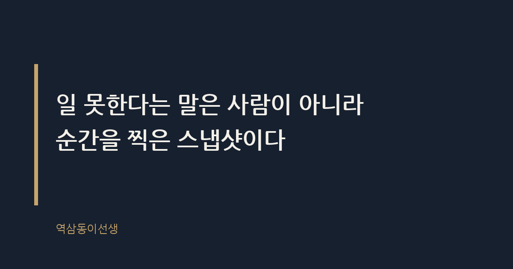

주제 일 못한다는 말을 들었을 때 회복하는 법 (evergreen / office)
제목 후보
메타 설명 일 못한다는 말을 들었을 때 흔들리지 않고 회복하는 법. 평가가 어떻게 만들어지는지 구조부터 이해하면 다르게 보인다.
라벨 일못한다는말, 직장생활, 회사생활, 번아웃회복, 직장인고민, 커리어관리, 일못한다는말들었을때, 일머리없다는말, 평판관리, 직장인피드백, 업무평가
실용 자산 체크리스트 — 회복을 위한 첫 단계로 '그 말을 분해해 보는' 순서가 필요한 주제라 체크리스트가 적합하다
발행 전 팩트체크
이미지 (Blogger 편집기에 드래그해 넣으세요)
도입부 사진 · ⓒ AV_Photographer / Pexels

입사 3년 차 때였다. 본부장이 회의 중에 내가 밤새 짠 기획안을 한 장 넘기더니 이렇게 말했다. "이선생은 센스가 좀 없네." 그 한마디였다. 자료가 부족하다거나 논리가 약하다는 지적이 아니라, 그냥 '센스가 없다'는 선고. 회의실에 있던 사람이 여섯 명쯤 됐다. 퇴근길 지하철에서 창문에 비친 내 얼굴을 보다가 울었다. 집에 가서도 그 말이 머릿속에서 떠나지 않았다.
일 못한다는 말을 들었을 때 회복하는 법은, 그 말을 지우는 데서 시작하지 않는다. 그 말을 분해하는 데서 시작한다. 말 자체와 싸우면 진다. 말이 만들어진 구조를 보면 이긴다.
"일 못한다"는 말이 유독 아픈 이유는 구체적이지 않기 때문이다. "이 부분 논리가 약하다"는 지적이면 고칠 곳이 보인다. 그런데 "일을 못한다"는 말은 사람 전체를 포괄한다. 고칠 지점을 알려주지 않고 낙인만 찍는다. 그래서 받는 사람은 뭘 바꿔야 할지 모른 채 자존감만 깎인다.
일 못한다는 말이란 대부분 구체적 사건 하나에서 출발해 사람 전체로 확장된 평가다. 본부장이 내게 "센스가 없다"고 한 그 회의도, 사실은 기획안 하나의 문제였다. 그런데 말은 기획안이 아니라 나를 겨냥했다. 이게 이 말의 구조적 함정이다.
더 고약한 건 그 말이 혼자 있을 때 몇 배로 부풀어 오른다는 점이다. 회의실에서는 한 문장이었는데, 그날 밤 이불 속에서는 "내가 이 회사에 맞지 않는 사람인가" 하는 질문으로 커진다. 말의 원래 크기와 내가 느끼는 무게 사이에는 늘 거리가 있다. 그 거리를 모르면 작은 지적 하나에 커리어 전체를 걸게 된다.
세월이 지나 내가 평가하는 자리에 앉아보니 알게 된 게 있다. 상사가 "쟤는 일머리가 없다"고 할 때, 그 말이 치밀하게 쌓인 데이터에서 나온 경우는 생각보다 적다. 최근 한두 달 안에 겪은 사건, 특히 스트레스를 받았던 순간의 기억이 평가를 강하게 좌우한다. 이걸 최신성 편향이라고 부른다. 반년 전에 잘한 일은 흐려지고, 지난주 실수만 또렷하게 남는 식이다.
브랜드실에 있을 때 평가 시즌마다 이런 장면을 여러 번 봤다. 임원 회의에서 누군가의 이름이 나오면, 가장 먼저 튀어나오는 말은 최근 그 사람과 부딪힌 특정 사건이다. 1년 치 실적표를 펼쳐놓고 말하는 사람은 드물다. 사람은 기억으로 평가하고, 기억은 편집된다. 일 못한다는 말도 결국 그 편집본에서 나온 문장이다.
그 본부장도 마찬가지였다. 나중에 알고 보니 그날 아침 윗선에서 다른 건으로 호되게 깨지고 온 날이었다. 내 기획안이 유난히 부족해서가 아니라, 그가 들고 들어온 짜증을 풀 상대가 마침 나였던 것이다. 이런 사정을 당시엔 전혀 몰랐다. 알았다면 그 말을 조금은 가볍게 들었을 텐데, 사람은 늘 뒤늦게 사정을 안다.
그날 회의실에서 나는 아무 말도 못 했다. 얼굴이 빨개진 채 고개만 끄덕였다. 한참 뒤에야 깨달았는데, 그게 오히려 나았다. 지적받은 그 순간은 이성보다 방어가 먼저 작동하는 때다. "아닙니다, 저는 이런 이유로 이렇게 했습니다"라고 바로 반박하면, 듣는 사람 귀에는 변명으로 들릴 확률이 더 높다.
대신 그 자리에서 할 수 있는 건 사실을 확인하는 질문뿐이다. "어떤 부분이 부족했는지 구체적으로 여쭤봐도 될까요"처럼 범위를 좁히는 질문. 감정을 담지 않고 사실만 물으면, 상대도 감정을 걷어내고 구체적인 지점을 짚어주는 경우가 많다. 그날 나는 이 질문조차 못 했지만, 나중에 후배들에게는 늘 이 말을 해준다. 받아치지 말고, 되묻는 쪽으로 가라고.
그 말을 들었을 때 가장 먼저 할 일은 감정을 억누르는 게 아니라, 말을 쪼개는 것이다. "일을 못한다"는 통째의 문장을 풀어보면 생각보다 범위가 좁아진다. 아래 순서대로 적어보면 된다.
이 다섯 줄을 채우고 나면 열에 아홉은 처음 받았던 충격보다 훨씬 작은 사건이 남는다. "일을 못한다"가 아니라 "지난달 보고서 하나가 기대보다 늦었다"는 수준으로 줄어드는 경우가 많다. 범위를 좁히는 것만으로도 회복은 절반쯤 시작된다.
다섯 줄을 다 적었는데도 가슴이 답답한 날이 있다. 그럴 때는 그 말을 혼자 끌어안고 있지 말고 믿을 수 있는 사람에게 그대로 꺼내놓는 게 낫다. 나는 그날 밤 옆 팀 과장에게 전화를 걸었다. 울먹이며 상황을 설명하자 그는 대뜸 "그분 원래 그렇게 말씀하신다, 나한테도 그랬다"고 했다.
그 한마디가 생각보다 큰 위로가 됐다. 혼자 생각하면 그 말이 나만을 겨냥한 특별한 선고처럼 느껴진다. 그런데 말로 꺼내놓고 다른 사람의 경험과 비교하는 순간, 그 사건의 실제 크기가 보인다. 혼자 삭이는 사람은 사건을 과장하고, 말로 꺼낸 사람은 사건을 축소한다. 회복이 빠른 사람들은 대개 이 과정을 생략하지 않았다.
또 하나 중요한 건, 그 말을 한 사람이 내 평판의 전부가 아니라는 사실이다. 평판이란 특정 한 사람의 판단이 아니라 여러 사람의 관찰이 쌓여 만들어지는 평균치다. 그런데 사람은 가장 아픈 말 한마디를 평판 전체로 착각하는 습관이 있다.
그때 본부장이 "센스가 없다"고 했을 때, 옆에 있던 팀장은 회의가 끝나고 따로 내게 와서 "자료 조사는 꼼꼼했다"고 말해줬다. 그 말은 내 기억에 거의 남지 않았다. 아픈 말은 크게 들리고, 다독이는 말은 작게 들린다. 그래서 회복하려면 의식적으로 다른 사람들의 시선을 함께 모아봐야 한다. 그 사람 한 명의 말이 조직 전체의 판단은 아니다.
실제로 그해 연말 인사평가에서 내 점수는 나쁘지 않았다. 본부장 한 사람의 발언과 실제 평가 결과 사이에는 생각보다 거리가 있었다. 그 거리를 모른 채 그날의 말 한마디로 1년을 미리 판단해버리면, 정작 쌓이고 있던 좋은 평가들을 스스로 지우는 셈이 된다.
| 확인 항목 | 작성 예시 |
|---|---|
| 누가 말했는가 | 직속 팀장이 회의 중 직접 말함 |
| 어떤 상황에서 나왔는가 | 특정 보고서 1건에 대한 피드백 |
| 구체적 사례가 있었는가 | 마감일을 이틀 넘긴 것 1회 |
| 반복된 패턴인가 | 최근 3개월 중 처음 있는 일 |
| 비교 대상이 있는가 | 같은 팀 선배와 암묵적으로 비교됨 |
회복이 더딘 사람들을 가만히 보면 공통점이 있다. 그 말을 듣고 정반대로 확 꺾인다는 점이다. "꼼꼼하지 못하다"는 말을 들은 후배 하나는 그다음부터 보고서를 세 번씩 검토하기 시작했다. 결과물의 완성도는 올라갔지만, 매번 마감을 넘기는 사람이 되어버렸다. "꼼꼼하지 못하다"는 꼬리표가 "느리다"는 새 꼬리표로 바뀐 것이다.
과잉 교정이란 지적받은 지점을 고치려다 균형을 잃고 다른 문제를 만드는 상태를 말한다. 이런 일이 생기는 이유는 지적 하나를 자기 존재 전체의 결함으로 받아들이기 때문이다. 보고서 한 건의 디테일 문제를 고치면 될 일을, 사람 자체를 뜯어고치려 드는 순간 균형이 무너진다. 회복이란 지적받은 지점만 정확히 고치는 일이지, 나 자신을 통째로 바꾸는 일이 아니다.
여기서 하나 솔직히 말해두고 싶은 게 있다. 회복이 하루 이틀에 되는 경우는 거의 못 봤다. 나도 그 말을 완전히 털어내기까지 두 달 가까이 걸렸다. 그 사이 비슷한 회의실에만 들어가면 심장이 먼저 쿵쾅거렸다. 회복이란 마음을 다잡는 순간이 아니라, 비슷한 상황을 몇 번 다시 겪으면서 몸이 먼저 괜찮아지는 과정에 가깝다.
그래서 "왜 나는 아직도 그 말에서 못 벗어났을까"라고 자책할 필요가 없다. 시간이 걸리는 건 당연하고, 그 시간 동안 아무것도 안 하는 것과 작은 결과물을 하나씩 쌓아가는 것은 전혀 다른 결과를 만든다. 방치된 두 달과 채워진 두 달은 겉보기엔 똑같이 흘러가지만, 끝에 남는 평판은 완전히 다르다.
그 일이 있고 나서 나는 바로 다음 기획안에서 전과 다른 태도를 보였다. 큰 변화를 시도하지 않았다. 오히려 작게, 그 본부장이 자료를 펼칠 때 바로 보일 수 있는 부분부터 고쳤다. 표지 디자인, 목차 순서, 숫자 단위 표기까지. 반전은 한 번의 대단한 성과가 아니라 작은 디테일의 반복에서 나왔다. 두 달쯤 지나니 같은 본부장이 "이번엔 깔끔하네"라고 했다. 그 한마디로 지난번 말이 사라진 건 아니었지만, 적어도 평판은 다시 쌓이기 시작했다.
옆에서 오래 지켜보니, 일 못한다는 말을 듣고 조용히 사라지는 사람과 다시 증명하는 사람의 차이는 크지 않았다. 다시 증명한 사람들은 그 말에 반박하려 하지 않았다. 대신 다음 결과물 하나를 더 꼼꼼하게 만들었다. 말로 되갚으려 하지 않고 결과로 되갚았다. 그리고 그 결과물은 거창하지 않았다. 다음 보고서 하나, 다음 이메일 한 통, 그 정도의 크기였다.
씁쓸하면서도 꽤 분명한 사실이 있다. 그 말을 들은 순간의 고통은 진짜지만, 그 말이 나라는 사람을 영구히 규정하지는 않는다. 평가는 특정 시점, 특정 사건을 찍은 스냅샷일 뿐이다. 사진 한 장이 그 사람의 인생 전체를 보여주지 않는 것처럼, 그 말 한마디도 나의 커리어 전체를 보여주지 않는다. 그걸 알고 나면 그 말 앞에서 조금은 덜 무너질 수 있다.
Q. 일 못한다는 말 듣고 그날 하루 종일 그 말만 곱씹었던 적, 저만 있는 건 아니죠?